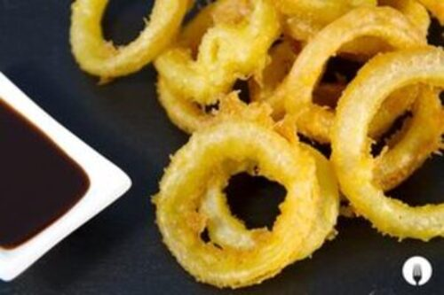

Aros de Cebolla Crujientes
Receta facil para la previa
¿Que necesitamos?
INGREDIENTES
-
1 cebolla
150 g. de harinar
150 ml. de soda
1 cucharadita de pimentón dulce
1 cucharadita de levadura
Pan rallado c/n
Sal
Aceite de oliva
PREPARACION
-
- Pelar y cortar en rodajas finas la cebolla, más o menos de 1 cm de grosor. Separar cada capa de la cebolla cuidadosamente. Deberían quedar con forma de aritos.
- Meterlos en agua fría durante unos 30 minutos.
-Mezclar en un bol la harina, levadura, soda fría, sal, una cucharadita de pimentón hasta que quede cremoso y sin grumos.
- Sacar las cebollas del agua, tirarles un poco de sal y meterlas en la mezcla, tienen que quedar completamente recubiertos.
- Retirar el exceso de masa de las cebollas y pasarlas por pan rallado.Reservamos en un plato y repetimos el proceso de rebozado con los demás aros.
- Freír a fuego fuerte. Contar 30 segundos y retirarlos, dejando que reposen sobre una rejilla o servilleta para escurrir el exceso de aceite. Así tendrás listos unos crujientes aros de cebolla caseros.